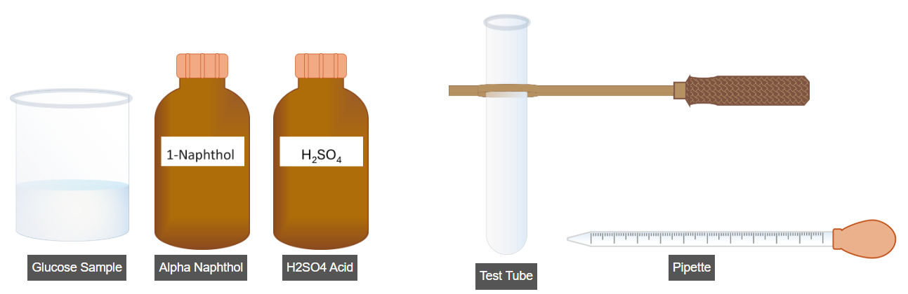
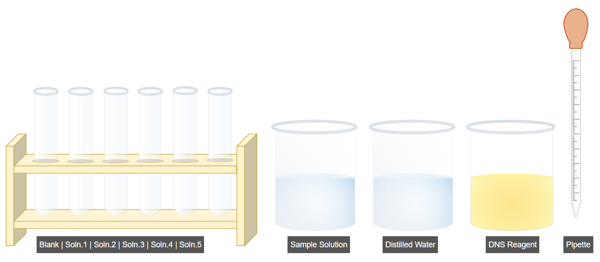
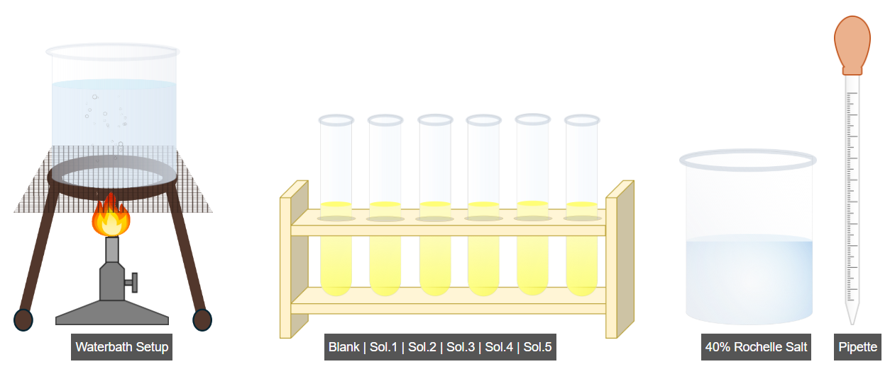
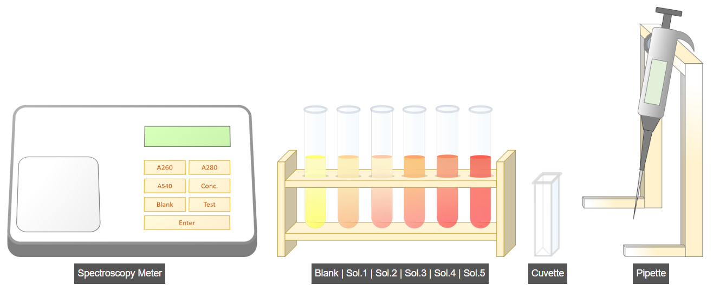
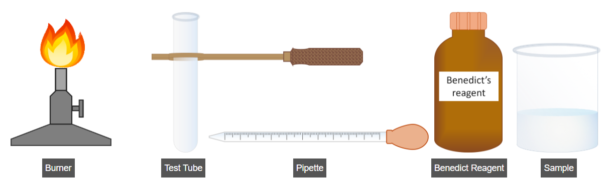
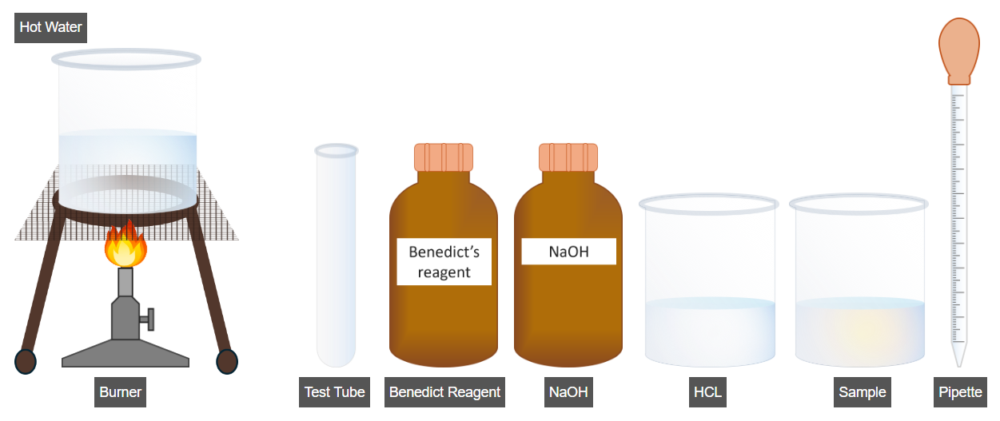

Qualitative and Quantitative Analysis of Sugars – Experimental Procedures
1. Qualitative Analysis of Sugars (Molisch Test)

Procedure
- Transfer 5 mL of glucose sample into a clean test tube using a pipette.
- Add 2–3 drops of α-naphthol reagent to the sample.
- Mix the solution thoroughly by gently shaking the test tube.
- Carefully add 2 mL of concentrated sulfuric acid along the side of the test tube.
- Observe the formation of a purple-colored ring at the junction of the two layers.
- The appearance of the purple ring confirms the presence of carbohydrates in the sample.
2. Quantitative Estimation of Reducing Sugars (DNS Method)

A. Preparation of Sample Solutions
- Add the sample solution into Test Tube 1 as specified in the table.
- Click Run to dispense the sample into the remaining test tubes as per the table.
- Add distilled water to the blank test tube as specified in the table.
- Click Run to add distilled water to the remaining blank tubes.
- Add DNS reagent to all test tubes as per the table using the Run function.
- Proceed to the next step.

B. Color Development
- Place all test tubes in a boiling water bath.
- Boil the samples for 5–10 minutes for color development.
- Allow the samples to cool to room temperature.
- Add 1 mL of 40% Rochelle salt solution to the test tubes.
- Click Run to add the Rochelle salt solution to the remaining tubes.
- Proceed to the next step.

C. Measurement of Absorbance at 540 nm
- Select the micropipette and set the volume to 1 mL.
- Transfer 1 mL of blank solution into a cuvette.
- Open the spectrophotometer lid and insert the cuvette.
- Set the wavelength to 540 nm (A540).
- Press the Blank button and then press Enter to record the blank absorbance.
- Click Run to measure the absorbance of the remaining samples in the same manner.
- Proceed to the next step for result calculation.
3. Benedict Test for Reducing Sugars

Procedure
- Add 5 mL of Benedict’s reagent into a clean test tube.
- Add 5 mL of the sample solution into the same test tube.
- Mix the contents thoroughly.
- Heat the mixture over a flame or burner for up to 5 minutes.
- Click on Result Analysis to observe and interpret the color change.
- A brick-red, green, or yellow precipitate indicates the presence of reducing sugars.
4. Benedict Test for Non-Reducing Sugars

(Performed only if no color change is observed in the reducing sugar test)
Procedure
- Add 2 mL of sample solution into a clean test tube.
- Add 2 mL of hydrochloric acid (HCl) into the test tube.
- Mix thoroughly and place the test tube in a water bath for 5–10 minutes.
- Add a few drops of sodium hydroxide (NaOH) to neutralize the acid.
- Add 2 mL of Benedict’s reagent to the test tube.
- Mix thoroughly and place the test tube in a water bath for 3–5 minutes.
- Click on Result Analysis to observe and interpret the results.
- A color change confirms the presence of non-reducing sugars.